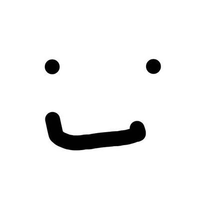
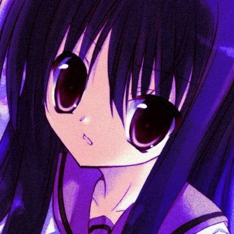

Welcome to Neural Ghostline † 502 Web site ! This is about the member page
◆ MENU ◆
トップ
メンバー紹介
作品紹介
イベント参加録
◆ メンバー紹介 ◆

＜代表＞ 霜月ぎめを
担当：
プログラム / グラフィック / 企画 / 雑用

＜メンバー＞ 桜小路ふぇの
担当：
音楽 / 企画
＜メンバー＞ 月城れいら
担当：
キャラクターデザイン